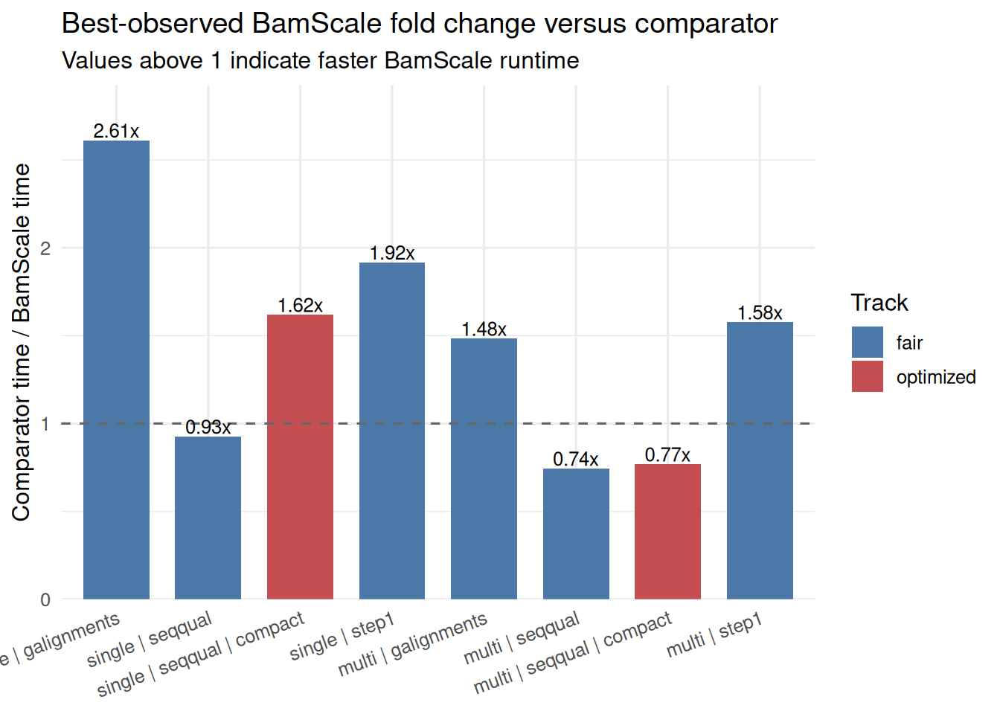
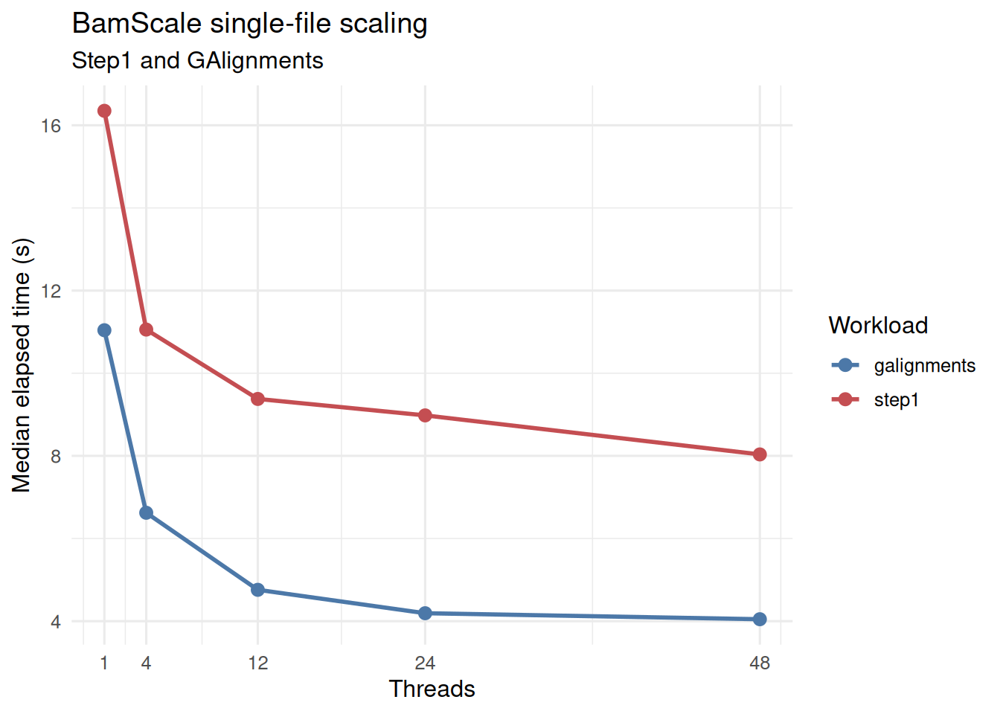
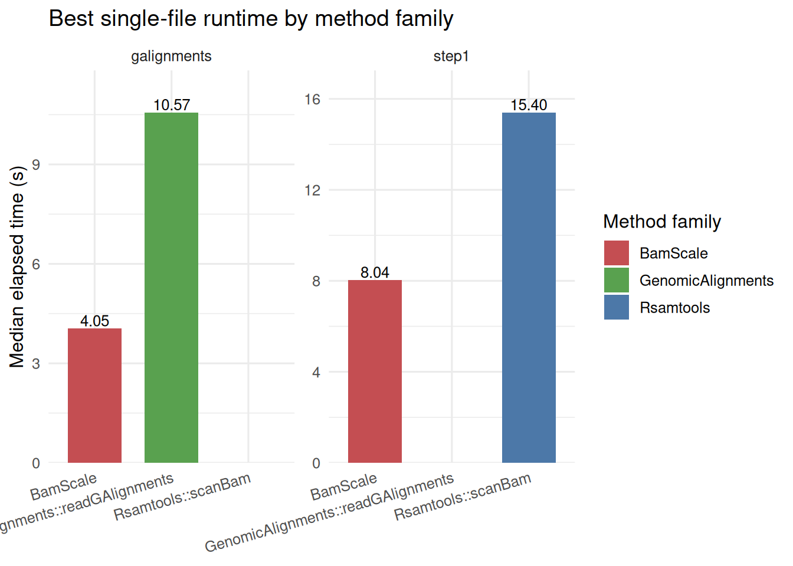
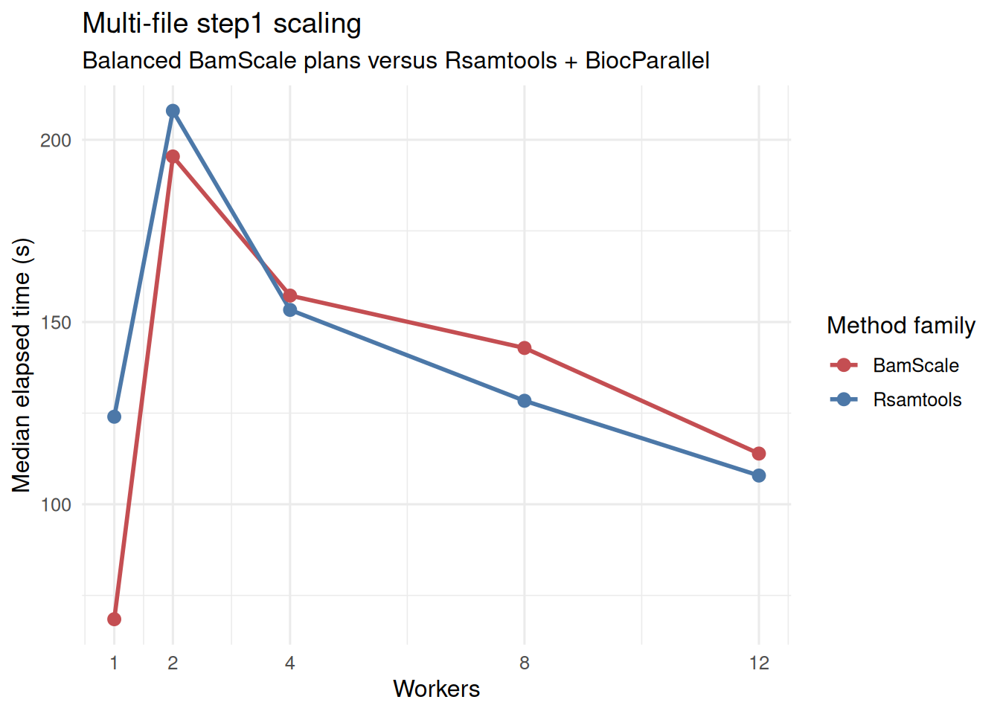
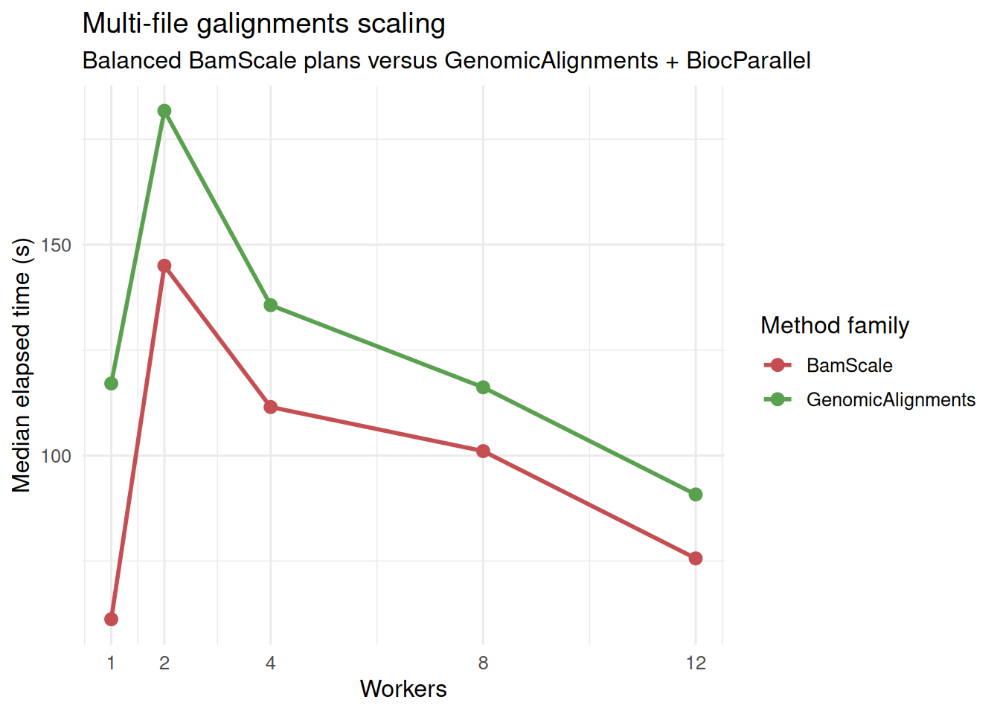
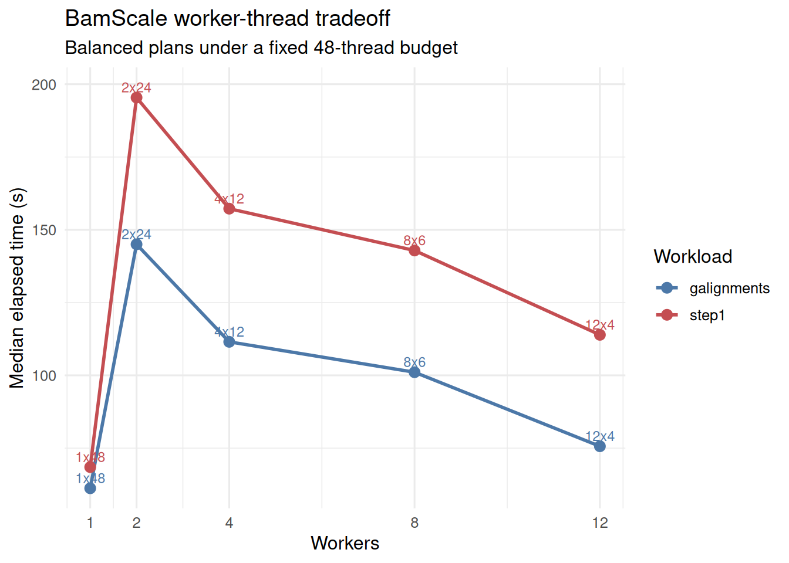
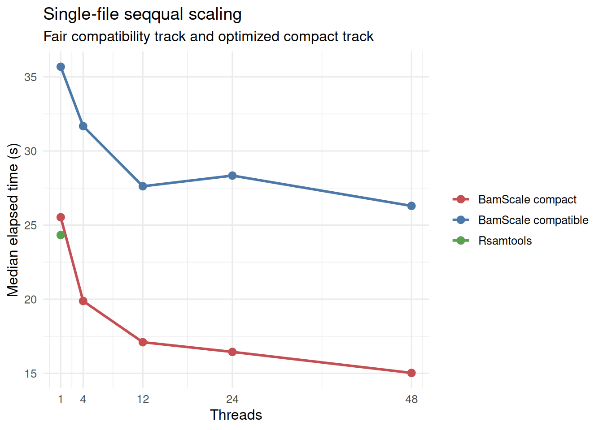
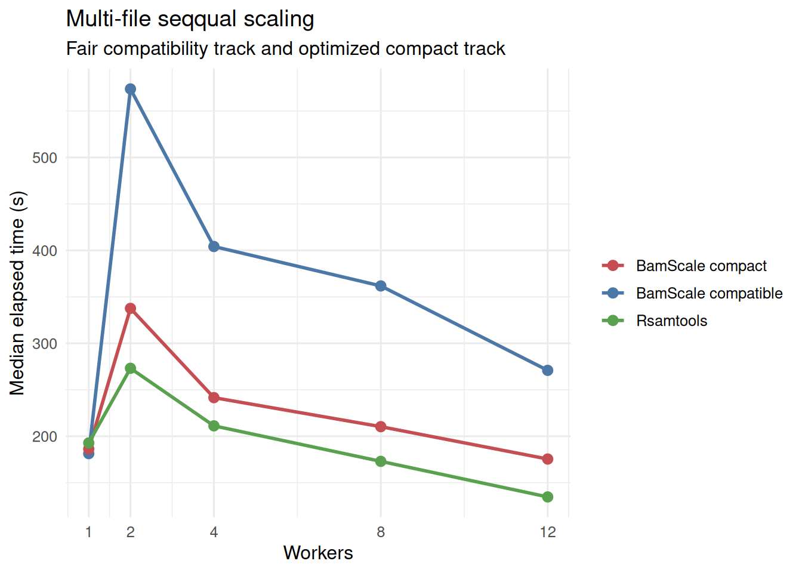

| Run | Workloads | Profile | CPU | Logical cores | RAM (GB) | Successful cases |
|---|---|---|---|---|---|---|
| run_20260320_133141 | step1, galignments | balanced | Intel(R) Xeon(R) Gold 6252 CPU @ 2.10GHz | 96 | 723.6 | 32 |
| run_20260320_162359 | seqqual | balanced | Intel(R) Xeon(R) Gold 6252 CPU @ 2.10GHz | 96 | 723.6 | 26 |
Benchmarking BamScale Across Step1, GAlignments, and SeqQual Workloads
Source:vignettes/benchmark-results.qmd
1 Overview
This article combines the final benchmark runs used for the current BamScale benchmark summary:
-
step1andgalignmentsfrom run_20260320_133141 -
seqqualfrom run_20260320_162359
These runs were generated with the same server-first benchmark harness, the same balanced profile family, the same deterministic case order, and the same worker/thread budget policy. Seqqual is reported separately because it includes both the fair compatibility track and the optimized compact track.
2 Data Loading
3 Benchmark Provenance
- Step1 and GAlignments run: run_20260320_133141
- SeqQual run: run_20260320_162359
- Step1/GAlignments results directory: /home/runner/work/BamScale/BamScale/inst/benchmarks/run_20260320_133141
- SeqQual results directory: /home/runner/work/BamScale/BamScale/inst/benchmarks/run_20260320_162359
4 Methods Rationale
This benchmark suite covers three distinct access patterns:
-
step1: alignment-metadata extraction without sequence/quality materialization. This is a good proxy for BAM filtering, fragment-length profiling, and fragment-distribution QC. -
galignments: construction of alignment objects suitable for Bioconductor workflows centered onGenomicAlignments. -
seqqual: full sequence and quality extraction. This is reported in two BamScale modes:-
faircompatibility mode, which is the closest comparator toRsamtools::scanBam -
optimizedcompact mode, which reduces internal overhead and should be interpreted as an optimized BamScale track rather than a strict apples-to-apples replacement for the compatibility path
-
Across all runs, the benchmark design emphasizes:
- deterministic case order
- balanced BamScale worker/thread plans
- explicit comparator baselines
- single-file and multi-file reporting
- fixed 48-thread budget for multi-file plans
5 Input Files
The same underlying four selected BAMs were used for both runs, with repeated files allowed to populate the 12-file multi-file benchmark set.
| file | source | selected_for_single | selected_for_multi | size_mb | has_index |
|---|---|---|---|---|---|
| /home/chiragp/.cache/R/ExperimentHub/134ab745547e62_2073 | chipseqDBData | TRUE | TRUE | 548.3 | TRUE |
| /home/chiragp/.cache/R/ExperimentHub/134ab7270c5da5_2072 | chipseqDBData | FALSE | TRUE | 320.4 | TRUE |
| /home/chiragp/.cache/R/ExperimentHub/134ab721bfa655_2071 | chipseqDBData | FALSE | TRUE | 305.2 | TRUE |
| /home/chiragp/.cache/R/ExperimentHub/134ab7231ef47d_2074 | chipseqDBData | FALSE | TRUE | 227.3 | TRUE |
6 Reference Counts
| run | scenario | workload | n_files | n_records | total_mb |
|---|---|---|---|---|---|
| run_20260320_133141 | multi | galignments | 12 | 77543925 | 4203.4 |
| run_20260320_133141 | multi | step1 | 12 | 132482148 | 4203.4 |
| run_20260320_133141 | single | galignments | 1 | 4670364 | 548.3 |
| run_20260320_133141 | single | step1 | 1 | 16675372 | 548.3 |
| run_20260320_162359 | multi | seqqual | 12 | 132482148 | 4203.4 |
| run_20260320_162359 | single | seqqual | 1 | 16675372 | 548.3 |
7 Best-Observed Summary
| Scenario | Workload | Track | Method family | Method | Plan | Median time (s) |
|---|---|---|---|---|---|---|
| multi | galignments | fair | BamScale | BamScale (balanced budget) | 1x48 | 61.204 |
| multi | galignments | fair | GenomicAlignments | GenomicAlignments::readGAlignments + BiocParallel | 12x1 | 90.777 |
| multi | seqqual | fair | BamScale | BamScale (balanced budget) | 1x48 | 181.277 |
| multi | seqqual | fair | Rsamtools | Rsamtools::scanBam + BiocParallel | 12x1 | 134.667 |
| multi | seqqual | optimized | BamScale | BamScale (compact seqqual budget) | 12x4 | 175.451 |
| multi | step1 | fair | BamScale | BamScale (balanced budget) | 1x48 | 68.469 |
| multi | step1 | fair | Rsamtools | Rsamtools::scanBam + BiocParallel | 12x1 | 107.882 |
| single | galignments | fair | BamScale | BamScale | 1x48 | 4.047 |
| single | galignments | fair | GenomicAlignments | GenomicAlignments::readGAlignments | 1x1 | 10.568 |
| single | seqqual | fair | BamScale | BamScale | 1x48 | 26.295 |
| single | seqqual | fair | Rsamtools | Rsamtools::scanBam | 1x1 | 24.327 |
| single | seqqual | optimized | BamScale | BamScale (compact seqqual) | 1x48 | 15.026 |
| single | step1 | fair | BamScale | BamScale | 1x48 | 8.035 |
| single | step1 | fair | Rsamtools | Rsamtools::scanBam | 1x1 | 15.403 |
8 BamScale-versus-Comparator Fold Change
| Scenario | Workload | Track | BamScale method | BamScale plan | BamScale (s) | Comparator method | Comparator plan | Comparator (s) | Comparator / BamScale | BamScale faster (%) |
|---|---|---|---|---|---|---|---|---|---|---|
| single | galignments | fair | BamScale | 1x48 | 4.047 | GenomicAlignments::readGAlignments | 1x1 | 10.568 | 2.611 | 61.7 |
| single | seqqual | fair | BamScale | 1x48 | 26.295 | Rsamtools::scanBam | 1x1 | 24.327 | 0.925 | -8.1 |
| single | seqqual | optimized | BamScale (compact seqqual) | 1x48 | 15.026 | Rsamtools::scanBam | 1x1 | 24.327 | 1.619 | 38.2 |
| single | step1 | fair | BamScale | 1x48 | 8.035 | Rsamtools::scanBam | 1x1 | 15.403 | 1.917 | 47.8 |
| multi | galignments | fair | BamScale (balanced budget) | 1x48 | 61.204 | GenomicAlignments::readGAlignments + BiocParallel | 12x1 | 90.777 | 1.483 | 32.6 |
| multi | seqqual | fair | BamScale (balanced budget) | 1x48 | 181.277 | Rsamtools::scanBam + BiocParallel | 12x1 | 134.667 | 0.743 | -34.6 |
| multi | seqqual | optimized | BamScale (compact seqqual budget) | 12x4 | 175.451 | Rsamtools::scanBam + BiocParallel | 12x1 | 134.667 | 0.768 | -30.3 |
| multi | step1 | fair | BamScale (balanced budget) | 1x48 | 68.469 | Rsamtools::scanBam + BiocParallel | 12x1 | 107.882 | 1.576 | 36.5 |

9 Step1 and GAlignments: Single-File Scaling


10 Step1: Multi-File Scaling

11 GAlignments: Multi-File Scaling

12 BamScale Worker-Thread Tradeoff

13 SeqQual: Single-File Fair and Compact Tracks

14 SeqQual: Multi-File Fair and Compact Tracks

15 SeqQual Compact Gain
| Scenario | Plan | Compatible (s) | Compact (s) | Compatible / compact |
|---|---|---|---|---|
| single | 1x1 | 35.683 | 25.530 | 1.398 |
| single | 1x12 | 27.620 | 17.098 | 1.615 |
| single | 1x24 | 28.339 | 16.444 | 1.723 |
| single | 1x4 | 31.678 | 19.878 | 1.594 |
| single | 1x48 | 26.295 | 15.026 | 1.750 |
| multi | 12x4 | 270.889 | 175.451 | 1.544 |
| multi | 1x48 | 181.277 | 186.321 | 0.973 |
| multi | 2x24 | 573.752 | 337.596 | 1.700 |
| multi | 4x12 | 404.183 | 241.524 | 1.673 |
| multi | 8x6 | 361.750 | 210.290 | 1.720 |
16 Benchmark Interpretation
This combined benchmark supports the following conclusions:
- BamScale showed clear single-file and best-case multi-file advantages for both
step1andgalignments, with the strongest multi-file points occurring in the low-worker, high-thread regime. - For
seqqual, BamScale’s fair compatibility track remained slower than the Rsamtools comparator, but the optimized compact track substantially reduced that gap and produced a clear single-file win. - In multi-file
seqqual, the compact track improved on the fair compatibility path but did not surpass the best Rsamtools multi-file baseline in this run. - Overall,
step1andgalignmentsare the clearest BamScale strengths, whileseqqualcompact mode represents a substantial optimization that improves, but does not fully close, the multi-file gap to the comparator.